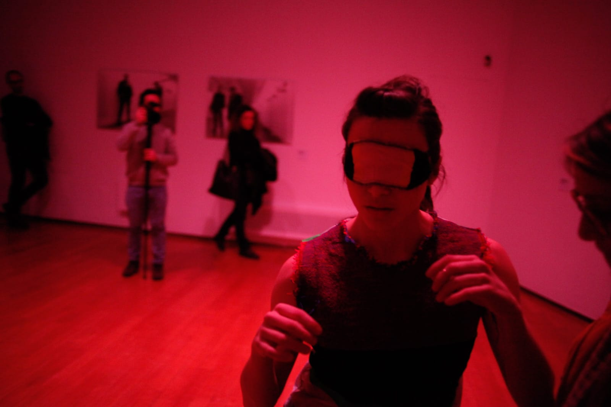

Annamaria Ajmone è danzatrice e coreografa. Laureata in Lettere Moderne presso l'Università Statale di Milano, si diploma come danzatrice presso la Civica Scuola di Teatro Paolo Grassi di Milano.
La sua ricerca si caratterizza per una costante attenzione alle qualità del movimento e agli stati di presenza, concependo la coreografia come pratica situata, collaborativa e incarnata, fondata sull'ascolto dello spazio, degli altri e delle condizioni materiali della performance. Le sue ricerche si sviluppano in maniera ramificata attraverso formati e durate differenti, seguendo una doppia traiettoria: da un lato la creazione di opere per contesti teatrali e istituzionali, dall'altro lo sviluppo di formati sperimentali e composizioni site- specific. Al centro della sua pratica vi è il corpo inteso come materia plasmabile e mutevole, continuamente trasformata dall'incontro, mentre la relazione tra corpi e spazi costituisce una questione compositiva centrale:lo spazio è un elemento non neutrale, attivo e generativo del processo coreografico.
Per le proprie produzioni Ajmone si avvale di collaboratori e collaboratrici con cui condivide il processo creativo, generando performance collettive in cui è complesso individuare la proprietà dell'oggetto artistico.
I suoi lavori sono stati presentati in festival, teatri e spazi espositivi internazionali, tra cui Torino Danza, La Biennale Danza (Venezia), Santarcangelo Festival, Public Fiction (Los Angeles), brut Wien, Bit Teatergarasjen (Bergen), FOG Triennale Milano Performing Arts, Festival Aperto (Reggio Emilia); Palais de Tokyo (Parigi), Pinacoteca Agnelli (Torino), Palazzo Grassi (Venezia), MAMbo (Bologna), La Casa Encendida (Madrid) e Istituto Svizzero (Palermo, Roma), oltre a numerosi altri festival e istituzioni internazionali.
Per Matera Capitale Europea della Cultura 2019 cura le coreografie dell'opera Cavalleria Rusticana, con la regia di Giorgio Barberio Corsetti e produzione del Teatro San Carlo di Napoli.
Tra i principali riconoscimenti: Premio Movin' Up (2017), borsa di studio nell'ambito del programma Crossing the Sea (2019), Premio Danza & Danza come Miglior interprete emergente contemporaneo (2015), Premio DNA/ Fondazione Romaeuropa (2014).
È fondatrice e presidente dell'associazione L'Altra, compagnia finanziata dal MiC – Ministero della Cultura, con cui promuove progetti artistici e curatoriali e conduce attività di trasmissione di pratiche attraverso workshop e laboratori. È tra gli organizzatori di Nobody's Indiscipline, piattaforma dedicata allo scambio e alla condivisione di pratiche artistiche.
Dal 2021 al 2024 è artista associata di Triennale Milano Teatro. Nel 2026 è invitata al Padiglione Italia della Biennale Arte 2026, all'interno della mostra Con te e con tutto di Chiara Camoni, con una nuova opera coreografica.
Email:
annamaria.org@gmail.com
Annamaria Ajmone
Accompagnamento e distribuzione:
Alessandra Simeoni
posta@alessandrasimeoni.net
Organizzazione e amministrazione:
Francesca d'Apolito
laltrassociazione@gmail.com
